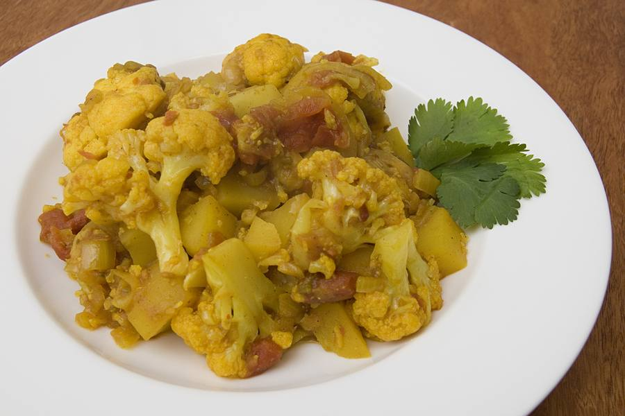

Prep15 min
Cook30 min
Total45 min
Serves4
Difficultyeasy
Allergens: none of the common ones
Ingredients
Quantities for 4.
- 1 medium (700g), cut into small florets with a little stalk on each Cauliflower
- 3 medium (400g), peeled and cut into 2cm cubes Potato
- 1 medium (120g), sliced Onion
- 2 medium (200g), chopped Tomato
- 2 inch, half grated and half julienned Gingeraloo gobi wants more ginger than you think
- 4 cloves, minced Garlic
- 2, slit Green Chilli
- 4 tbsp, heated to smoking and cooled Mustard Oilor neutral oil
- 1 tsp Cumin Seeds
- 3/4 tsp Turmeric
- 2 tsp Coriander Powder
- 3/4 tsp Chilli Powder
- 3/4 tsp Amchur
- 1/2 tsp Garam Masala
- 3 tbsp, chopped Coriander Leaves
- to taste Salt
Equipment
stovetop, kadhai
Before you start
- Cut the florets small and dry them thoroughly on a cloth after washing. Wet cauliflower steams and goes limp instead of browning.
- Keep the potato cubes the same size as the florets so they finish together.
- Have a lid ready — the vegetables cook covered on low, in their own steam, with no added water.
Method
- Heat 3 tbsp of the oil in a wide kadhai until it shimmers and crackle the cumin seeds for 20 seconds.
- Fry the potato cubes on medium-high for 6 minutes, undisturbed for the first 3, until they are gold on several faces, then lift them out.Moving them too early tears the crust off. Let them sit.
- Add the cauliflower to the same pan with the remaining oil and fry 6 minutes until browned in patches.Brown patches on the florets are the flavour of this dish. Do not crowd the pan.
- Push the cauliflower aside, add the onion, and fry 5 minutes until soft and gold.
- Stir in the grated ginger, garlic and green chillies and fry 90 seconds.
- Add the turmeric, coriander powder and chilli powder, stir 20 seconds, then add the tomato and 1 tsp salt.
- Cook 6 minutes until the tomato has broken down into a coating masala rather than a gravy.
- Return the potatoes, stir to coat everything, cover and cook on the lowest heat for 10 minutes, shaking the pan every few minutes.No water. The vegetables release enough of their own and water turns this into a mush.
- Check that a knife slides into both potato and stalk with no resistance; give it 5 minutes more if not.
- Uncover, stir in the amchur and garam masala, and cook 2 minutes to dry it off.
- Finish with the julienned ginger and coriander and serve with roti.
Storage
Keeps 3 days refrigerated. Reheat in a dry pan on medium so it crisps again rather than steaming. Does not freeze — the cauliflower collapses.
Nutrition Good estimate
| Per serving410 g | Per 100 g | |
|---|---|---|
| Calories | 296 kcal | 72 kcal |
| Protein | 7.5 g | 1.8 g |
| Carbohydrate | 37.0 g | 9.0 g |
| of which sugars | 8.7 g | 2.1 g |
| Fibre | 8.3 g | 2.0 g |
| Fat | 15.4 g | 3.8 g |
| of which saturated | 2.0 g | 0.5 g |
| of which unsaturated | 11.9 g | 2.9 g |
Worked out from the listed quantities; most of the ingredient list could be weighed. Some ingredients have no exact match in the nutrient database and use the nearest equivalent: amchur, garam masala. Estimated from raw ingredients using USDA FoodData Central. Cooking changes are not modelled, and added salt is excluded, so sodium is not given.
Recipe v1.0.0, last updated 2026-07-31. Curated for Khaana and kept under version control.